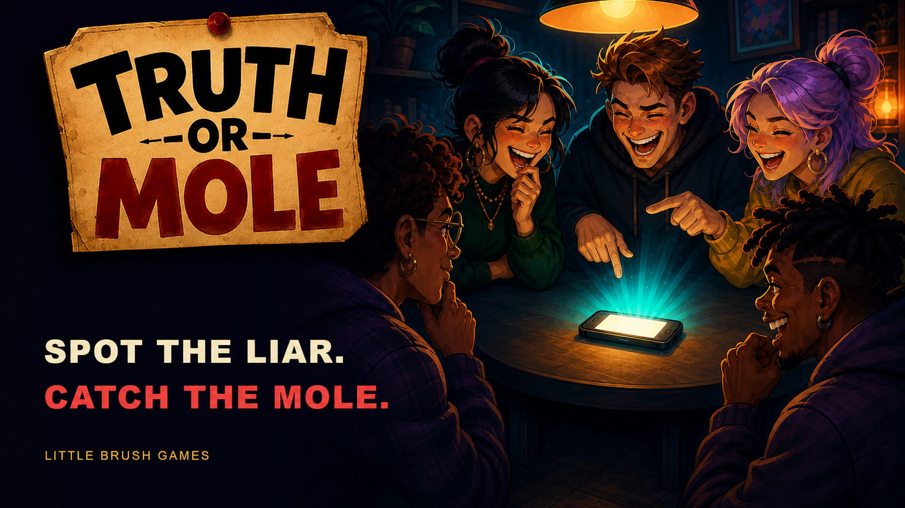

Official media resources
Truth or Mole
Press kit.
Facts, artwork, logos, and real gameplay captures for journalists and creators.
Download complete press kit ↓
The essentials
One phone. A room full of suspects.
- Game
- Truth or Mole
- Developer
- Andy & Nata
- Publisher
- Little Brush Games
- Platforms
- Android: released · iOS: in development
- Players
- 3–16 · One shared device
- Languages
- English, German, Russian
- Age rating
- 16+
- Model
- Free download, optional subscription
Short description
Truth or Mole is a pass-and-play social deduction party game. Each round picks a topic, then each player receives a different public prompt. Honest players answer truthfully; the hidden Mole must tell a convincing lie and survive the group vote.
Made by Andy & Nata, published by Little Brush Games.
View on Google Play ↗Ready to use
Artwork & downloads.
{kind=link}
{kind=link}
{kind=link}
Making something about Truth or Mole?
Use the supplied assets for coverage, reviews, and creator content.
Keep logos unchanged and distinguish key art from actual gameplay.
For licensing or uses beyond coverage, contact us.